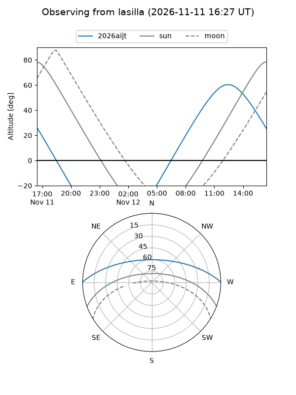
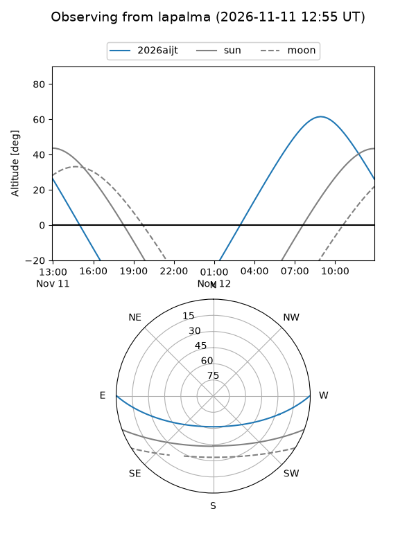
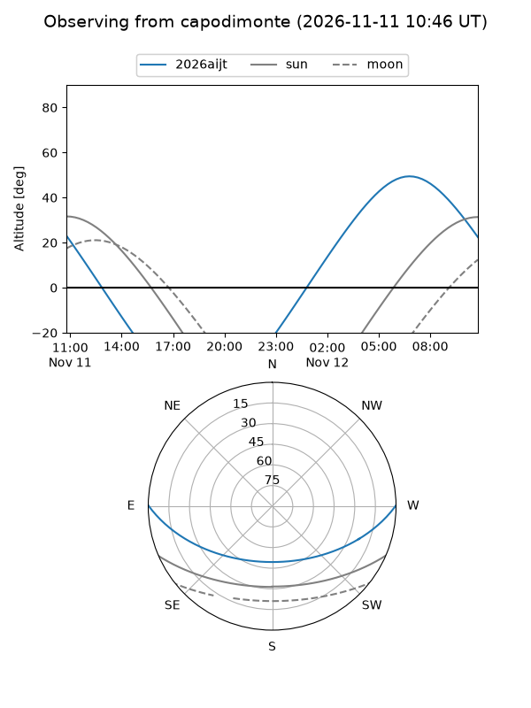
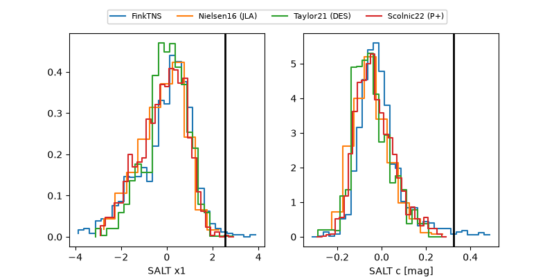

2026aijt
Target 2026aijt at 2026-11-12 09:20
Aliases and brokers:
FINK-ZTF: ztf.fink-portal.org/ZTF26acekdym
Lasair-ZTF: lasair-ztf.lsst.ac.uk/objects/ZTF26acekdym
ALeRCE-ZTF: alerce.online/object/ZTF26acekdym
YSE-PZ: ziggy.ucolick.org/yse/transient_detail/2026aijt
TNS name: wis-tns.org/object/2026aijt
Direct TNS query: direct search
alt names
ZTF26acekdym (ztf,fink_ztf)
2026aijt (tns,yse)
Coordinates:
equatorial (ra, dec) = 167.1827,+0.45722
equatorial (HMS+DMS) = 11:08:43.84,+00:27:26.00
galactic (l, b) = (255.9178,+53.67956)
Flags:
peak dt: +0.7
Photometry:
last atlasc=19.02, ztfr=18.81
1 atlasc, 6 ztfr detections
Lightcurve
Visibility



Additional plots
